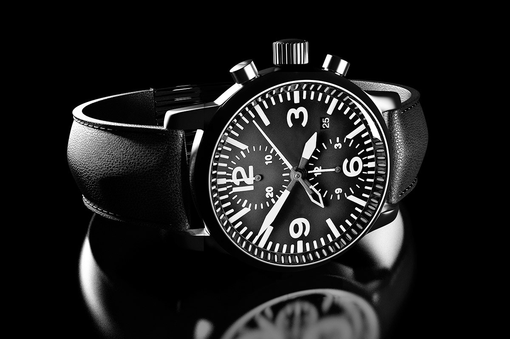

Emily Bernd & Associates From product to all things digital
2013
The various forms of elements from different places expose the essence or identity of a subject through eliminating all non-essential forms, features, or concepts.
Photography Art Direction
Barneys
